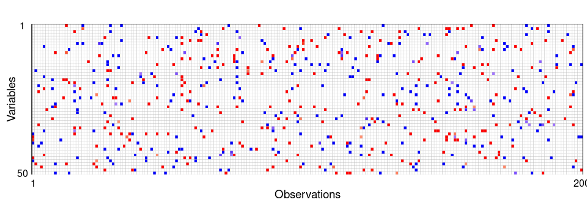

demo
demo.RmdThe (screened) bone mineral density data
dat = regcell::genevar(n = 200, p = 100, e = 0.05, sigma = 3)
y = dat$y
x = dat$xOutlier detection
library(tidyverse)
#> ── Attaching packages ─────────────────────────────────────── tidyverse 1.3.2 ──
#> ✔ ggplot2 3.4.0 ✔ purrr 1.0.1
#> ✔ tibble 3.1.8 ✔ dplyr 1.0.10
#> ✔ tidyr 1.2.1 ✔ stringr 1.5.0
#> ✔ readr 2.1.2 ✔ forcats 0.5.2
#> ── Conflicts ────────────────────────────────────────── tidyverse_conflicts() ──
#> ✖ dplyr::filter() masks stats::filter()
#> ✖ dplyr::lag() masks stats::lag()
fit1 <- cellWise::DDC(x)
#>
#> The input data has 200 rows and 100 columns.
p1 = cellWise::cellMap(fit1$stdResid, columnlabels = c(1,rep(" ",dim(x)[2]-2),dim(x)[2]), rowlabels = c(1,rep(" ",dim(x)[1]-2),dim(x)[1]), columnangle = 0,
rowtitle = "Observations", columntitle = "Variables", sizetitles = 2,adjustrowlabels = 0.5, adjustcolumnlabels = 0.5)+
theme(axis.text.x = element_text(size = 12),
axis.text.y = element_text(size = 12),
axis.title.x = element_text(size = 14),
axis.title.y = element_text(size = 14),
legend.title = element_text(size=14), #change legend title font size
legend.text = element_text(size=12))
p1
Model training
inTrain <- caret::createDataPartition(y, p = 0.7)[[1]]
ytrain = y[inTrain]
xtrain = x[inTrain,]
ytest = y[-inTrain]
xtest = x[-inTrain,]
#fit a model using CR-Lasso
fit0 = sregcell_std(ytrain,xtrain, penal = 1, softbeta = T, prob = 0.995, softzeta = 1, maxiter = 30)
res = ytest - fit0$intercept_hat - xtest%*%fit0$betahat
#fit a model using RLars
fit1 = Rlars(ytrain,xtrain)
res2 = ytest - fit1$betahat[1] - xtest%*%fit1$betahat[-1]
df = data.frame(res = c(res, res2),
method = c(rep("CR-Lasso", length(res)),rep("RLars", length(res)) ))
boxplot(res~method, outline = FALSE, data = df)
The Bodyfat dataset
methods compared
mtds = list(
# sss = function(y, x){shootings::sparseshooting(x,y)$coef},
rlars = function(y, x){regcell::Rlars(y, x)$betahat},
# mmlasso = function(y,x){mmlasso::mmlasso(x,y)$coef.MMLasso.ad},
slts = function(y,x){robustHD::sparseLTS(x,y)$coefficients},
cell_lasso_post = function(y,x){
fit = regcell::sregcell_std(y = y, x = x, softbeta = TRUE,
lambda_zeta = 1, penal = 1, penaldelta = 0, prob = 0.99995)##这里好奇怪啊
return(c(fit$intercept_hat_post, fit$betahat_post))
},
lasso = function(y,x){
return(regcell::lassocv(y,x)$betahat)
}
)
library(mfp)
#> Loading required package: survival
data("bodyfat")
y = bodyfat$brozek
x = robustHD::robStandardize(bodyfat[,-c(1:4)])
x = as.matrix(x)Leave-one-out Cross-Validation
library(doParallel)
result <- foreach(mtd = 1:length(mtds),
.packages = c("lars", "robustHD", "robustbase" , "mmlasso",
"shootings", "cellWise", "regcell", "purrr", "robcovsel", "mfp"))%:%
foreach(obs = 1:dim(x)[1])%dopar%{
ytrain = y[-obs]
xtrain = as.matrix(x[-obs,])
ytest = y[obs]
xtest = x[obs,]
betahat = mtds[[mtd]](ytrain,xtrain)
res = ytest - betahat[1] - sum(xtest*betahat[-1])
rst = c(mtd = names(mtds)[mtd], n = obs, res = res)
rst
}
save(result, file = "result_bodyfat.RData")